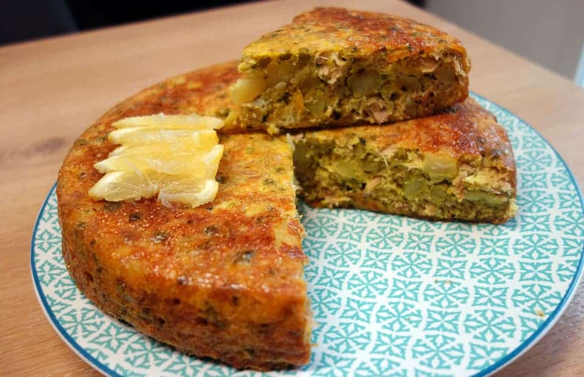

Tajine

Description
Tunisian Tajine is a baked dish similar to a frittata, made with eggs, cheese, meat, and spices.
It is a staple dish in Tunisia, often served as an appetizer or main course, rich in flavor and texture.
Ingredients
- 4 eggs
- 1 cup grated cheese (Gruyère or Parmesan)
- 1 cup cooked chicken or ground beef
- 1 onion, finely chopped
- 2 cloves garlic, minced
- 1 teaspoon ground turmeric
- 1 teaspoon ground cumin
- Salt and pepper to taste
- 1 tablespoon olive oil
- 1/2 cup boiled potatoes, mashed
- 1/2 cup chopped parsley
- 1/2 cup breadcrumbs
Steps
- Preheat the oven to 180°C (350°F).
- In a pan, heat olive oil and sauté the onion and garlic until soft.
- Add the cooked chicken or ground beef, turmeric, cumin, salt, and pepper. Stir well.
- In a bowl, beat the eggs and mix in the mashed potatoes, cheese, and chopped parsley.
- Combine the egg mixture with the cooked meat and stir well.
- Grease a baking dish and pour in the mixture, smoothing the top.
- Sprinkle breadcrumbs on top and bake for 30-40 minutes, or until golden and firm.
- Let it cool slightly before slicing and serving.
Home